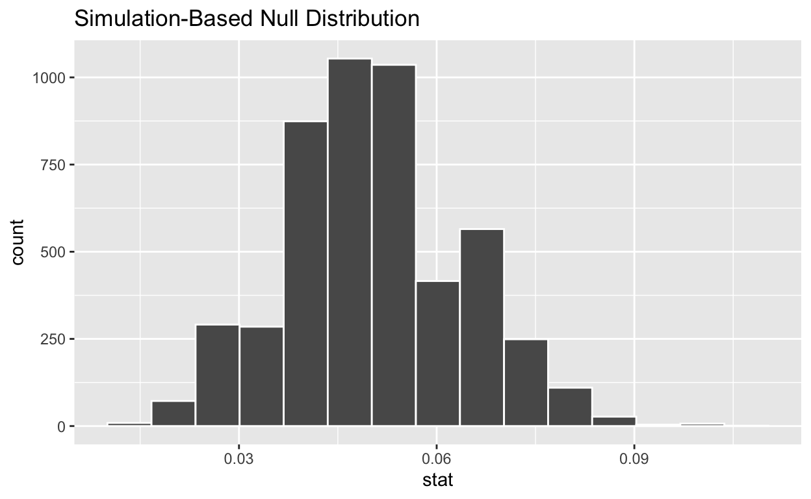

This is still a bit rough! Gaps I plan to fill in are outlined below.
In this tutorial you will learn the basics of simulation-based inference using the infer package. To begin we load the necessary packages.
library(tidyverse)
library(infer)Recall statistical hypothesis testing is the procedure that allows us to decide between two claims about the population parameter. We will follow a three step procedure to conduct a hypothesis.
We will use a real example to illustrate the steps of hypothesis testing. Student cell phone use during exams (texting, searching the internet, accessing class resources, etc) is a serious breach of academic integrity. Supose you are conducting a study of cheating in college courses and are interested in determining if more than 5% of students in a population of interest have used their cell phone during an exam.
1. Pick the null and alternative hypothesis
The null hypothesis is denoted \(H_o\) and represents the status quo claim that nothing unusual is going on. The alternative hypothesis is denoted \(H_a\) and states the opposite - there is something going on that merits further investigation. Both hypotheses are defined for parameters (not statistics).
Consider the null and alternative hypotheses in words below.
What is the appropriate way to express the null and alternative hypotheses in symbols? (make a question. can add question what is parameter, what is pop, etc)
2. Take a representative sample of the population, collect data, and summarize the data with a statistic.
Researchers took a representative sample of 267 students, surveyed them confidentially and found that 27 had used a cell phone during an exam (CITE).
The choice of summary statistic depends on the context. In this example, a natural choice is the sample proportion, \(\hat{p} = 27 / 267\) (make question).
3. Determine how likely it is to see data as or more surprising as what we observed, assuming the null hypothesis is true.
We next find the probability of observing data as or more extreme as what we observed, assuming \(H_o\) is true. This is called the \(p\)-value. We’ll calculate this for the academic integrity example in a moment.
4. Make a Decision
We reject \(H_o\) if the \(p\)-value is small. A small \(p\)-value means it is unlikely to observe something as or more extreme assuming \(H_o\) is true.
How small is small enough? We use a threshold value called the significance or \(\alpha\) level set prior to collecting data. A common choice is \(\alpha = 0.05\). If \(H_o\) is true, we expect to make the wrong decision 5% of the time.
If the \(p\)-value is \(\alpha\) or greater, the results are not statistically significant.
Recall the null and alternative hypothesis.
We need to know what values of \(\hat{p}\) we expect assuming the null hypothesis is true. In other words, we need to simulate a distribution for \(\hat{p}\) assuming the probability of cheating is \(0.05\).
This null distribution for \(\hat{p}\) tells us what sample proportions to expect, assuming the null hypothesis is true.
We first create a tibble with the sample data.
cheating_data <-
tibble(outcome = c(rep("text", 27), rep("no text", 267 - 27)))
glimpse(cheating_data)## Rows: 267
## Columns: 1
## $ outcome <chr> "text", "text", "text", "text", "text", "text", "text", "text…cheating_data %>%
count(outcome)We will generate the null distribution using the infer package.
null_dist <- data %>%
specify(response = ___, success = ___) %>%
hypothesize(null = ___,
p = ___
) %>%
generate(reps = ___, type = ___) %>%
calculate(stat = ___)To generate the null distribution we specify the following:
specify() bothhypothesize() bothgenerate() both:calculate() our sample statisticnull_dist <- cheating_data %>%
specify(response = outcome, success = "text") %>%
hypothesize(null = "point",
p = c("text" = 0.05, "no text" = 0.95)
) %>%
generate(reps = 5000, type = "simulate") %>%
calculate(stat = "prop")Questions (add)
What does each row of null_dist represent? Where should the null distribution be centered?
We next visualize the null distribution.
ggplot(data = null_dist, mapping = aes(x = stat)) +
geom_histogram(binwidth = 0.005) +
labs(title = "Null distribution",
x = "Sample proportion",
y = "Count")
It remains to calculate the \(p\)-value. Recall we observed a sample proportion of \(\hat{p} = 27 / 267 \approx 0.101\) and the \(p\)-value is the probability of observing data as or more extreme as what we observed, assuming \(H_o\) is true.
(add question: Just examine the null distribution - what is the \(p\)-value?)
Let’s use the null distribution to find the \(p\)-value directing.
null_dist %>%
filter(stat >= (27/267)) %>%
summarize(p_value = n()/nrow(null_dist))(Add question: Is this sufficient evidence to reject the null hypothesis?)
(Add question: provide a conclusion in context)
Add exercise with proportions (handedness?)